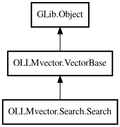

Search
Object Hierarchy:

Description:
public class Search : Object
Executes vector search operations.
Performs semantic codebase search using FAISS vector similarity and returns formatted search results with code snippets. Converts search
queries to vector embeddings, performs similarity search, and retrieves code snippets from source files using the buffer system.
Supports filtering by vector IDs (from SQL queries) and element type. Results include metadata and code snippets extracted from the
source files.
Usage Example
// Create search instance
var search = new OLLMvector.Search.Search(
vector_db,
sql_db,
embedding_client,
active_project,
"find authentication logic",
10, // max_results
filtered_vector_ids, // optional filter
"method" // optional element_type filter
);
// Execute search
var results = yield search.execute();
Content:
Creation methods:
Methods:
Inherited Members:
All known members inherited from class GLib.Object
- @get
- @new
- @ref
- @set
- add_toggle_ref
- add_weak_pointer
- bind_property
- connect
- constructed
- disconnect
- dispose
- dup_data
- dup_qdata
- force_floating
- freeze_notify
- get_class
- get_data
- get_property
- get_qdata
- get_type
- getv
- interface_find_property
- interface_install_property
- interface_list_properties
- is_floating
- new_valist
- new_with_properties
- newv
- notify
- notify_property
- ref_count
- ref_sink
- remove_toggle_ref
- remove_weak_pointer
- replace_data
- replace_qdata
- set_data
- set_data_full
- set_property
- set_qdata
- set_qdata_full
- set_valist
- setv
- steal_data
- steal_qdata
- thaw_notify
- unref
- watch_closure
- weak_ref
- weak_unref